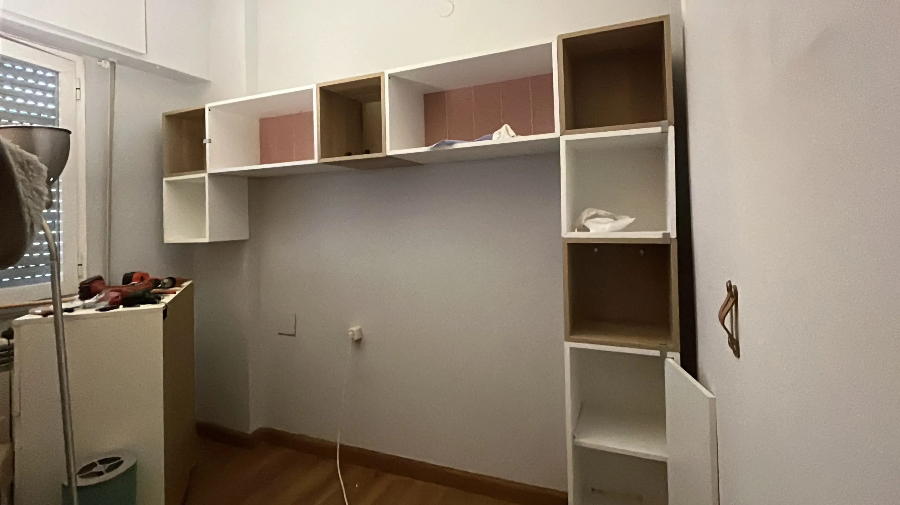

Transformación Dormitorio juvenil · Madrid
Optimización espacial en dormitorio juvenil de superficie reducida, resuelto mediante un
sistema continuo de mobiliario integrado que concentra descanso, estudio y almacenaje sin intervención de obra.
La propuesta se apoya en modulación precisa, control de alturas y continuidad de planos, priorizando
viabilidad constructiva y claridad en ejecución, con validación en resultado real.
Contexto
Condicionantes, objetivo operativo y traducción a ejecución.
El espacio original planteaba una geometría ajustada y un programa exigente para su superficie: descanso, puesto de estudio funcional y capacidad real de almacenaje, con un uso intensivo y evolución en el tiempo.
El objetivo fue resolver el programa completo sin fragmentar el espacio, evitando piezas independientes y apostando por una solución unitaria que facilitara la lectura espacial y la ejecución. La intervención se plantea sin obra, trabajando mediante proporción, modulación y sistema, con atención a alturas útiles, encuentros y continuidad de planos.
Planteamiento
Lectura rápida · verificación dimensional · soporte a coordinación.
Planta acotada para encaje real del programa, alzados para control de alturas y encuentros, y axonometría para lectura del conjunto. En coordinación, una lámina de instalación aporta trazabilidad y reduce interpretaciones en taller/obra.

{kind=link}
{kind=link}
{kind=link}
{kind=link}
{kind=link}
{kind=link}
{kind=link}
{kind=link}
{kind=link}
{kind=link}
Propuesta
Programa completo en 9 m²: jerarquía, continuidad y viabilidad.
La solución se concibe como un sistema continuo donde cada pieza responde a una lógica común de modulación y alineación. Se prioriza continuidad horizontal para ampliar percepción espacial, control estricto de profundidades y pasos libres, e integración del puesto de estudio como parte estructural del conjunto. La iluminación se incorpora como componente del sistema (posición y alturas), evitando elementos añadidos que comprometan ejecución o mantenimiento.


Ejecución
Puntos críticos: replanteo, puntos eléctricos y encuentros.
En coordinación se fijan ejes, cotas y encuentros para asegurar continuidad de líneas y evitar ajustes en obra. Se definen alturas y posiciones de tomas/puntos de luz (según alcance), el paso de cableado y la secuencia de montaje, garantizando un sistema ejecutable sin improvisación y compatible con tolerancias de carpintería e instalación.
{kind=link}

{kind=link}
Resultado
Validación en real: proporción, continuidad y uso.
El resultado valida las decisiones de modulación y control de alturas: el estudio queda integrado sin fragmentar, el almacenaje aporta capacidad sin saturación y la lectura del frente se mantiene limpia. La correspondencia entre documentación y ejecución facilita control de proceso y entrega un conjunto estable en uso real.


¿Colaboramos?Interiorismo como soporte de proyecto y obra: criterios, documentación útil y coordinación de acabados/iluminación, con alcance, entregables y calendario definidos desde el inicio.